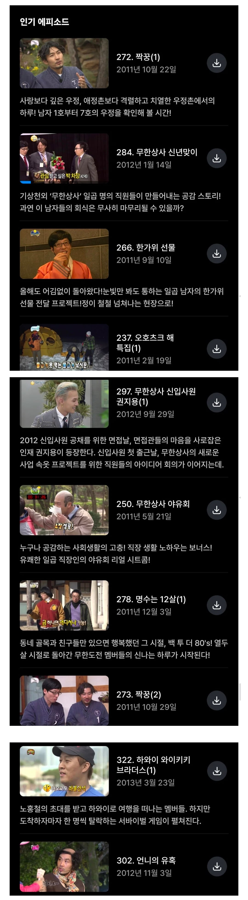

무야호

무야호
ㅇㄷ
농촌특집 없다고? 논두렁달리기 ㅈㄴ 웃겼는데
와이키키 은근재미없는데 순위에있네
방 정하기가 ㅈㄴ재밌는데ㅋㅋㅋㅋㅋㅋ
해외나간거 중에는 젤 재밌었는데
전성기 멤버 완전체 다같이 나간거도 있고
난 논두렁달리기가 재밌었는데
이게 ㄹㅇ 무한도전 롱런에 쐐기를 박게되는 회차 아닐까...조심스레 생각ㅋㅋㅋ
무모한도전 레전드는 기차랑 달리기 대결이고
오호츠크해 원탑
우천취소없는거 인정못함
춘향뎐 특집!
매 매점매석을 하는 연예계의 파렴치한 유재석
난 난 그탐관오리같은 그자식을 가만두지않겠다
국 국민의 적인 연예계의 탐관오리 유재석
죽 죽이겠다
ㅇㄷ
정신감정 특집
죄와길 어디갔어
정총무가 쏜다
죄와길
마이너리티리포트
꼬리잡기
YES OR NO
예능총회
무인도
여드름브레이크
돈을갖고튀어라
예능총회
이 중에 단 하나도 없는거 놀랍네
쿠팡 이용자가 어려서 그런가봄
다 아는 것들이구만
다 재밌는것들이네 ㅋㅋㅋㅋㅋㅋㅋ
더 넣고 싶은 것들 많은데 저기서 떠 뺄만한것도 없어 ㅋㅋㅋㅋㅋㅋㅋㅋ
7점이요
난 무한상사 에피소드는 다 재미없는 편이던데
죄와길이 없다니
난 재밌었던거
조정특집(데프콘)
무인도편
김상덕
가요제 대부분(특히 순정마초)
모델하는것도 재밌었는데
스포츠댄스
니가가라 하와이
식객도 재밌는뎅
죄와길은 꺽꺽대면서 웃었던거 같은데
예능총회가 없네